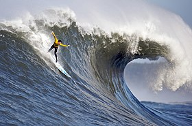

Пляж Пуэрто Чикама, расположенный на северо-западе Перу, известен самыми длинными волнами в мире. Именно поэтому здесь проводят чемпионаты по серфингу международного уровня. Но даже тех, кто равнодушен к покорению водной стихии, это место ошеломляет, ведь увидеть волны столь огромной протяженности можно, пожалуй, только на этом побережье. Это невероятно красиво! Кажется, что какой-то художник-гигант раскрасил водную глядь в горизонтальные белые полосы, растянувшиеся на километры.
Пять минут на одной волне
Местные любители серфинга рассказывают, что этот пляж обнаружил в 1960-х годах один из самых известных североамериканских серферов Чак Шипман. Удивительно длинные волны он увидел из иллюминатора, когда возвращался домой на самолете после чемпионата мира по серфингу в Пунта-Скале. Позже он нашел этот участок на карте и приехал сюда, чтобы открыть самое идеальное место для катания.
